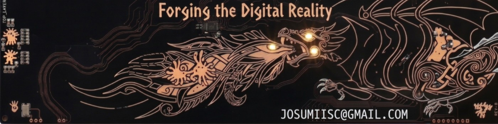

De una idea a la realidad
¡Hola! Soy Josué Farfán González, alguien curioso y apasionado por cómo funcionan las cosas, con determinación y ganas de mejorar siempre, explorando cómo se mueven las personas, las cosas y todo lo que nos rodea.

Galería de Proyectos & Prácticas
Cada tarjeta resume una experiencia real: esquemáticos, circuitos montados en protoboard, oscilogramas y videos de funcionamiento. Haz clic en cualquiera para abrir su ficha técnica.
Áreas de Interés & Práctica Técnica
Los campos de la electrónica donde más disfruto aprender, experimentar y poner a prueba circuitos reales en el laboratorio.
Microelectrónica & Diseño VLSI
Flujo completo en herramientas de grado industrial EDA para nodos nanométricos (TSMC 28nm) y experiencia de sala limpia.
- Cadence Virtuoso (Layout & Schematics)
- Síntesis lógica con Cadence Genus
- Simulación RTL en Verilog / VHDL
- Manipulación de obleas de silicio en Cleanroom
Electrónica de Potencia & Motores
Control de máquinas eléctricas rotativas y modulación de energía en corriente alterna y directa de alta potencia.
- Control de motores trifásicos industriales
- Puentes rectificadores con tiristores (SCR)
- Detección de cruce por cero y disparo de fase
- Automatización con PLCs y lógica de relevación
FPGAs & Lógica Reconfigurable
Diseño de arquitecturas paralelas en silicio sin latencia de CPU para procesamiento de señales y temporización digital.
- Familias Xilinx Spartan-3E y Spartan-6 Nexys 3
- Descripción de hardware en VHDL
- Generación de PWM y controladores LCD por compuertas
- Conteo de tiempo de vuelo ultrasónico en tiempo real
Sistemas Embebidos & IoT
Desarrollo de firmware en C/C++ bare-metal y RTOS para telemetría distribuida, pantallas táctiles y sensores industriales.
- ESP32, Arduino Mega/Uno, STM32
- Bibliotecas gráficas optimizadas (LovyanGFX)
- Buses I2C, SPI, UART y 1-Wire (DS18B20, INA219)
- Redes ad-hoc WiFi SoftAP y servidores HTTP asíncronos
RF & Telecomunicaciones
Diseño electromagnético, acoplamiento de impedancias y caracterización instrumental en frecuencias de microondas.
- Antenas planas Microstrip Patch a 2.45 GHz
- Líneas de transmisión y matching a 50 Ohmios
- Medición en analizador de espectro de RF
- Generación de ruido físico para criptografía (TRNG)
IA, Visión & Robótica
Procesamiento de imágenes por computadora, modelos de deep learning para OCR y cinemática de mecanismos impresos en 3D.
- Detección multiobjeto y patrones en tiempo real
- OpenCV, Python, PyTorch y APIs FastAPI
- Perfilometría e inspección por línea láser
- Modelado 3D CAD y manufactura aditiva Creality Ender
Certificaciones & Reconocimientos
Evidencias oficiales de cursos intensivos en EDA, certificaciones de industria, participación en hackathones de innovación y divulgación científica.
Josué Farfán González
Curiosidad por entender cómo funciona el mundo, gusto por ensuciarme las manos con hardware y muchas horas disfrutando el laboratorio.
Siempre he creído que la mejor manera de aprender electrónica no es quedándose solo en la teoría, sino atreviéndose a armar el circuito, medirlo y entender por qué no funcionó a la primera hasta que quede perfecto. Estoy en mi último semestre de la Licenciatura en Electrónica en la BUAP y viví una etapa clave durante mi estancia de investigación en el INAOE, donde aprendí de cerca la rigurosidad científica, el trabajo en salas limpias y el manejo de instrumentación avanzada.
No pretendo presentarme como un experto que se las sabe todas; me considero un estudiante apasionado, disciplinado y con muchas ganas de seguir aprendiendo de personas con más experiencia. Cada proyecto en esta página representa desvelos, dudas resueltas, notas de laboratorio y la satisfacción genuina de ver un diseño funcionar en la vida real.
Estancia de Investigación • INAOE
Una experiencia formativa invaluable en el INAOE, colaborando con investigadores en instrumentación, pruebas de laboratorio y primeros acercamientos a entornos de cuarto limpio.
Último Semestre de Electrónica • BUAP
Facultad de Ciencias de la Electrónica. Fortaleciendo bases en circuitos analógicos, diseño digital en FPGAs, electrónica de potencia y programación de sistemas embebidos.
Laboratorio & Sala Limpia
Práctica formativa conociendo el proceso de fotolitografía en obleas de silicio y exploración introductoria del flujo de diseño VLSI con Cadence.
Comunidad Estudiantil • IEEE Sección Puebla
Miembro Estudiantil IEEE (Sección Puebla). Me motiva conectar con la comunidad tecnológica, asistir a conferencias y aprender constantemente de los avances en el área.

Ecosistema Tecnológico e Instrumentación
Instrumentos de medición y suites de software con los que desarrollo, pruebo y valido sistemas físicos.
Instrumentación de Laboratorio
Software & Suites EDA
Hardware, MCUs & FPGAs
Lenguajes & Protocolos
Iniciemos una Conversación
Siempre estoy entusiasmado por aprender de personas con experiencia, colaborar en proyectos de hardware o intercambiar ideas sobre sistemas embebidos, FPGAs y circuitos. ¡Escríbeme con total confianza!